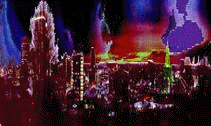
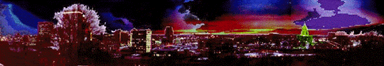

 NIX WAS HAVING ONE HECK OF A PARTY at his temple inColumbia, the sort of affair where I get to hobnob incognito with themillionaires and manufacturers who feed my murder machine, when all of thesudden a band of centaurs burst in, drunk off their asses on boom-youthprivilege, obstreperousness, and other libations.
"We're pissed off at your party," one of the chief bullies approached thepres, gold nose ring misting with the furious heat of his vitality, hisheathen heart.
"And I'll be a horse's bottom before I let you ride me around any more."The rest of the beasts snorted and brayed their complicity.
"It's okay folks"--typically, Nix's first mistake was to ignore the upsetand instead turn attention to the uneasy sheep at table, upsetting hisguests and further angering the insurgents. "It's just a little uppitinessamong an estranged herd. We'll give'm a little more grain and, if thatdon't do the trick, lick 'em with the switch--hell, flay 'em alive, if wehave to!"
"Put a pipe in your this, Nix" another of the hybrid thugs grumbled,introducing a carved piped, double-bowled with a ribald cock 'n' ballsdesign, into this, the executive orifice, "and smoke it!"
Fumbling with the thing, apparently liking the feel of puckering the thick,fluted stem, right cheek bulging over the mushroom-capped mouthpiece, Nixmumbled out the other side, "Emmybobby gob a match?"
"Yeah--my ass 'n' your face!" offered a runt from the bunch, still a pupbut bearing one helluva hoof, with which he delivered a dizzying kick tothe president's boney shin. The whole herd brayed and whinnied at thesight of the big burrito holding his ankle and hopping in circles, a bonerclenched between dentures.
I knew I could send those brats hoofing with one blazing breath ofbrimstone, but I wasn't about to blow my cover. The shock and the smell ofsinged hide would certainly better offend our illustrious guests thananything these donkey-donged dervishes had cooked up in their pranksterdom.
The first brute shuffled forward and snorted out a burst of flame thatcaught the pipe in its rotation and brightly burned the bowlful of bud.The president sipped strong smoke and his usually-scowling brow bloomedinto a quizzical tilde; beneath, beady eyes glowed like uppercase umlauts,bold.
Something had to stop these gate-crashers before some idiot slipped up andgot the head honcho hurt or, worse, high. The rest of the guests wereshifting and straying after fleecy coats and gold chapeaux, prepared tolet their fair-weather poster boy go this indiscretion alone, whensuddenly, up stepped ol' NASA with his pocketful of prestidigitation.
He beckoned us onto the lawn, where the butlers layed blankets for belleand brute alike to witness NASA's cosmic display. All, even the intruders,settled down and mumbled approvingly at the majestic flourish--the instanterection of one of those Apollo launch pads as a sort of proscenium forhis show. We knew we were in for a good one, from the flights of fear andfancy with which he had festooned missions one through ten.
Out of his belly emerged Apollo 11. The weak and wronged watched alongwith the cowards and criminals as he catapulted the projectile from thelaunch pad, all of us awed by the grace and muscle required for the thing'sswift arc to the moon. Out walked little men! They sent back instantpictures! They mugged a game of golf! Well, you know the story fromthere. . . . Even I was astonished at the import of this, what mortalscould set themselves to while deities idled and angels sored.
For a second I even caught myself wondering at the majesty of thesesucculent little pink-on-the-inside delicacies, and the beast in mefaltered and practically questioned, "Why not serve?"--a Satan's sin! Goodthing I snapped out of it when the little transistor in my mind blippedreports of the murder rate among the montagnardsebbing. Meant to say, "I will be served!" Must needs feed themachine.
The next day the impish agitators were again crying "Injustice!" andarguing the money would have been better spent on some street urchin'slunch. But that night the entire company was impressed by the might ofthis magnificent trick--no mirrors; just mad, wanton magic. The WhiteHouse was quiet, if only for an eve. And gods filed back in the templewhile the slack-jawed centaurs stood studded, staring up at the starry sky.
